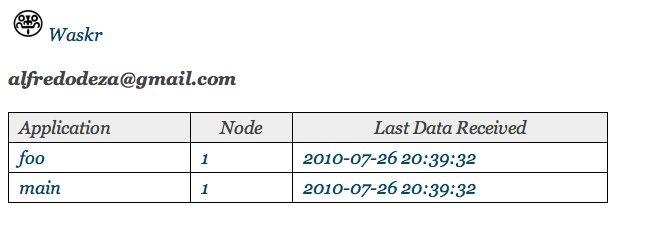
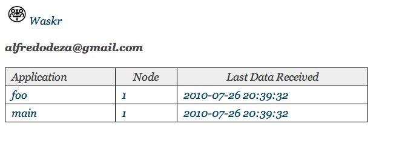
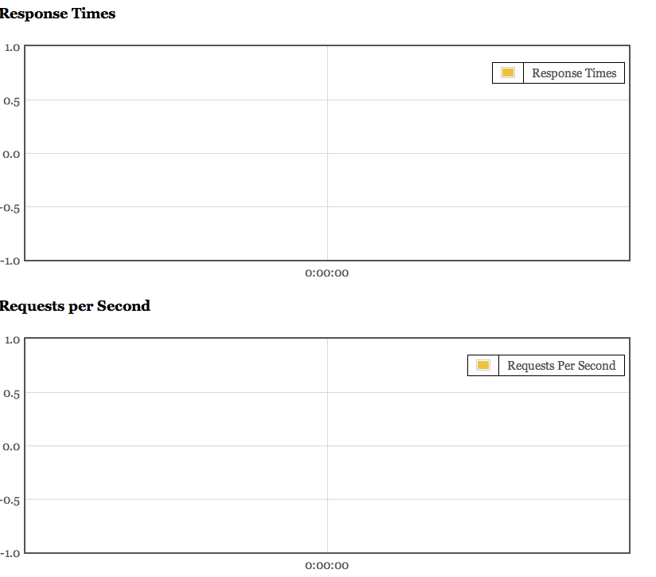
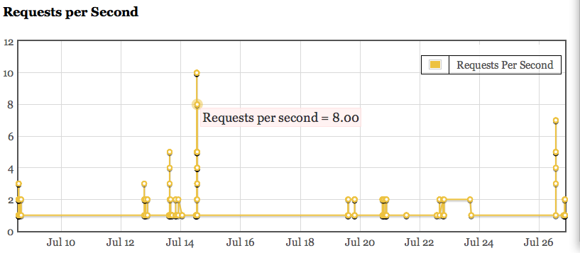

Main Page¶
This is where you can see all your applications and nodes, including some data that tells you when was the last time that a stat was received by the database.
This is what 2 applications would look like:
For convenience we have added a web interface. Although, the most important part of waskr as a middleware is storing the stats, not actually giving powerful representation of it.
This interface is separate from the middleware, meaning it runs as a different entity, with its own server instance and port (as you may have seen from the Adding Configuration).
Once you have started the web server with your desired configurations (see server) you will need to login as the web_user you have configured in your INI file (this greatly differs from earlier versions of waskr where you needed to add/remove users via the command line).
If you haven’t added such a user in your configuration file it is tribial to do so:
waskr.web.user = user@example.com
Warning
This DOES NOT provide a secure interface. Adding your email is just a deterrent for unwanted usage.
You will need to restart the server if you make any changes.
At login time, the server will verify the value of waskr.web.user and match it to what you submit.
By default, this value is set to False and will not allow any logins.
The web instance of waskr runs in the foreground. To stop it, you need to send a KeyboardInterrupt signal by hitting Ctrl-C
The web server stores a cookie that takes a while to expire. Once you ahve logged in correctly you will be able to return to the application without being prompted again for some time.
This is what you should get the first time you run the web interface:

This is where you can see all your applications and nodes, including some data that tells you when was the last time that a stat was received by the database.
This is what 2 applications would look like:
Each application is a link that will take you to the stats page for that specific app. URL’s are as RestFul as they can, so this is what you would see if you hit the main app:
Note that the graph is empty, this is because no data has been pushed to the database (yet).
If you start hitting your application with the middleware in it you should see something like this:
We are lacking lots of web features, but since we are interacting with data in a RetFul way you can ask for N Minutes ago in the url, like:
http:://localhost:8080/application/main/360
By default, waskr displays the last 2 hours of activity. But in the above we are requesting the last 4 hours (e.g. last 360 minutes).